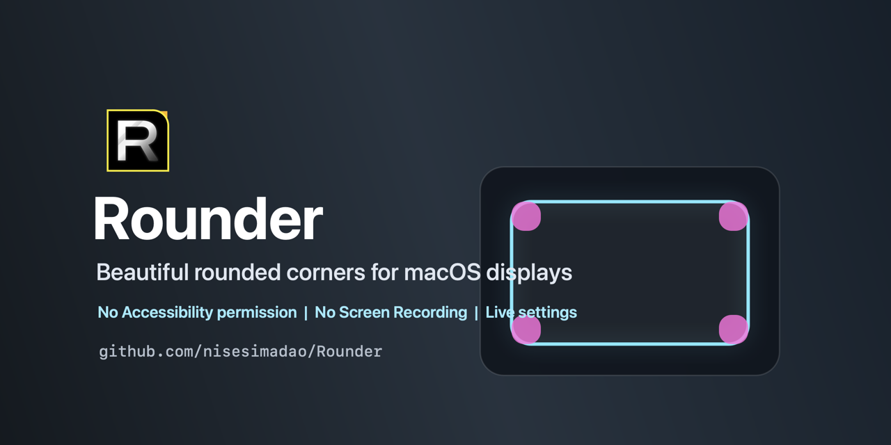

Rounder
A small macOS menu-bar app that adds software rounded corners to external displays and older Macs.

What It Does
- Rounds screen corners without Accessibility or Screen Recording permission.
- Supports external monitors and multi-display setups.
- Applies radius, color, corner, preset, and gaming glow changes live.
Install
Download Rounder.zip, unzip it, and move Rounder.app to Applications.
The app is unsigned. On first launch, right-click the app and choose Open.